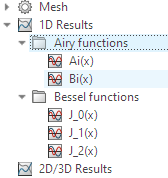

3D Simulation Results¶
After successfully running the solver on our model, the next step is to read and then use the results from the solver.
There are two ways to read the results. One is to extract the results from a project in a running instance of CST Studio Suite. The second way is to retrieve the results from the project files. Both ways require the TreePaths of the results.
Preparations¶
Please open the CST project “simulation_done.cst” from the previous session, then run the following code.
import numpy as np
from typing import Iterator, Union
import cst.interface
de = cst.interface.DesignEnvironment.connect_to_any_or_new()
prj = de.active_project()
print("Looking at results inside: ", prj.filename())
We create a helper function to retrieve the tree paths from the CST MWS project.
def get_1d_s_param_paths(mod: Union["interface.Project.Model3D", "results.ResultModule"]) -> Iterator[str]:
"""
Gets all 1D S-Parameter results from prj and yields them.
"""
tree_items = mod.get_tree_items()
for tree_item in tree_items:
tree_item_comp = tree_item.split("\\")
# S-Parameter results have at least 3 "TreePathComponents"
if len(tree_item_comp) > 2:
if tree_item_comp[0].startswith("1D Results"):
if tree_item_comp[1].startswith("S-Parameters") and not tree_item.endswith("S-parameters"):
yield tree_item
# test function:
print( list( get_1d_s_param_paths(prj.model3d) ) )
Similar to the get_shapes_including function,
we defined in
Structure Modeling/Working with created Items
, get_1d_s_param_paths yields all 1D S-Parameter results of our project.
This will work for both ways of retrieving the results.
The shown code can easily be changed to get other types of results, by changing the if-conditions.
Getting Results from a running CST Studio Suite instance¶
In this section, we will be looking at how to get the results from a running instance of CST Studio Suite and working with these results.
Using the function defined in Getting the TreePaths to get the TreePaths we need, we can continue by getting the result IDs of the TreeItems and then the results.
# using `prj` as before
for item_path in get_1d_s_param_paths(prj.model3d):
result_id = prj.model3d.ResultTree.GetResultIDsFromTreeItem(item_path)
result = prj.model3d.ResultTree.GetResultFromTreeItem(item_path, result_id[0])
print(result_id)
print(type(result))
# Work with the provided Results here
The resultID of a result is retrieved,
using prj.model3d.ResultTree.GetResultIDsFromTreeItem() and passing the corresponding TreePath.
With the TreePath and the resultID the Result can be retrieved, using prj.model3d.ResultTree.GetResultFromTreeItem().
In this case, this will return a Result1D Object, which contains the data of the results.
Working with the Results¶
Now that we have the results as a Result1D object, we can start working with the results. This section shows example codes of what you can do with the results.
We need some convenience functions. First, extracting 1D results into numpy arrays, is done like
def result1d_to_numpy(res: "interface.Project.Result1D") -> tuple[np.ndarray, np.ndarray]:
"""
converts Result1D object to numpy arrays of x(float) and of y(complex) values
"""
x = np.array(res.GetArray("x"))
y_complex = [complex(yre, yim) for yre, yim in zip(res.GetArray("yre"), res.GetArray("yim"))]
y = np.array(y_complex)
return x, y
This function gets the x-values, the imaginary y-values and the real y-values from the Result1D object.
The imaginary (yim) and real (yre) values for y are combined in the numpy array y.
The function then returns these values in a numpy array.
Using the following helper functions get_complex_max() and get_complex_min(),
we can get the maximum and minimum of the y array and the x-value, where y reaches this value.
def get_complex_max(x: np.ndarray, y: np.ndarray) -> tuple[float, complex]:
"""
returns the x- and y-values where y reaches its maximum value
"""
r_index = np.argmax(np.abs(y))
return x[r_index], y[r_index]
def get_complex_min(x: np.ndarray, y: np.ndarray) -> tuple[float, complex]:
"""
returns the x- and y-values where y reaches its minimum value
"""
r_index = np.argmin(np.abs(y))
return x[r_index], y[r_index]
We can also calculate the dB values from the complex values.
The helper function deci_bell_of() does this for a complex value or for arrays of complex values.
def deci_bell_of(y: Union[complex, np.ndarray]) -> Union[float, np.ndarray]:
"""
returns the dB-value(s) of y
"""
return 20 * np.log10(np.abs(y))
Putting everything together, we get the following script:
from matplotlib import pyplot as plt
for item_path in get_1d_s_param_paths(prj.model3d):
result_id = prj.model3d.ResultTree.GetResultIDsFromTreeItem(item_path)
result = prj.model3d.ResultTree.GetResultFromTreeItem(item_path, result_id[0])
# Work with the provided Results here
x, y = result1d_to_numpy(result)
x_max, y_max = get_complex_max(x, y)
x_min, y_min = get_complex_min(x, y)
y_db = deci_bell_of(y)
y_db_max = deci_bell_of(y_max)
print(y_db_max)
plt.plot(x, y_db)
plt.plot(x_max, y_db_max, "ro")
plt.grid(True)
plt.show(block=False)
plt.pause(1)
plt.close()
Get Results from files¶
To access the results without a running instance of CST Studio Suite, the cst.results module can be used.
It allows reading one-dimensional result curves and data points of CST project files, as well as 2D data which is saved in the form of colormaps.
Getting the Results¶
prj = cst.interface.get_current_project()
print("Looking at results inside: ", prj.filename())
import cst.results
res_acc = cst.results.ProjectFile(prj.filename(), allow_interactive=True)
res_3d = res_acc.get_3d()
for item_path in get_1d_s_param_paths(res_3d):
result = res_3d.get_result_item(item_path)
# Work with the provided Results here
Instead of opening a CST Project, we need to define a ProjectFile to access its data.
After defining the ProjectFile we can create a ResultModule instance using get_3d() on our ProjectFile.
Using this, the get_1d_s_param_res() can be called to get the TreePaths of our results.
With the TreePaths we can simply call res_acc.get_result_item(item_path) which will return a ResultItem,
that contains the data of the results.
Working with the results¶
Now that we have the results as a ResultItem object, we can start working with the results. This section shows example codes of what you can do with the results.
from matplotlib import pyplot as plt
for item_path in get_1d_s_param_paths(res_3d):
result = res_3d.get_result_item(item_path)
# Work with the provided Results here
x = np.array(result.get_xdata())
y = np.array(result.get_ydata())
x_max, y_max = get_complex_max(x, y)
x_min, y_min = get_complex_min(x, y)
y_db = deci_bell_of(y)
y_db_max = deci_bell_of(y_max)
print(y_db_max)
plt.plot(x, y_db)
plt.plot(x_max, y_db_max, "ro")
plt.grid(True)
plt.show(block=False)
plt.pause(1)
plt.close()
We can use .get_xdata() and .get_ydata() on the result item, each returning a list.
In this case .get_xdata() will return a list of frequencies
and .get_ydata() will return a list of complex parameter values.
Using np.array() we convert these lists to numpy arrays so that it is easier to work with them later on.
Now that we have numpy arrays of the results, we can use the same helper functions as in Working with the results.
Import Data as Result¶
Instead of exporting data, it is also possible to import data. Running the following snippet, a new MWS will be created and some special functions from the scipy library will be imported into the 1D Results folder.
# === create the data to be plotted:===
import scipy
plots = []
# Bessel functions:
from scipy.special import jv
xs = np.linspace(-10, 10, 201)
for order in np.arange(0, 3, 1):
ys = jv(order,xs)
plots.append( ("Bessel functions", f"J_{order}(x)", xs, ys) )
# Airy functions:
from scipy.special import airy
xs = np.linspace(-15, 2, 201)
ai, aip, bi, bip = airy(xs)
plots.append( ('Airy functions', 'Ai(x)', xs, ai) )
plots.append( ('Airy functions', 'Bi(x)', xs, bi) )
# === plot in a new CST project: ===
prj = de.new_mws()
# import curves into CST Result tree:
for folder, name, xs, ys in plots:
assert len(xs) == len(ys), "xs and ys must be the same length"
new_result = prj.model3d.Result1D("")
new_result.Initialize(len(xs))
new_result.SetArray(xs, "x")
new_result.SetArray(ys.tolist(), "y")
new_result.Save( name)
new_result.AddToTree(rf"{folder}\{name}")
The code for importing the curves into CST is self-explanatory.
Note that SetArray works based on python lists, not numpy arrays.
After running .AddToTree() with the desired path, the result can be found
under that path.
